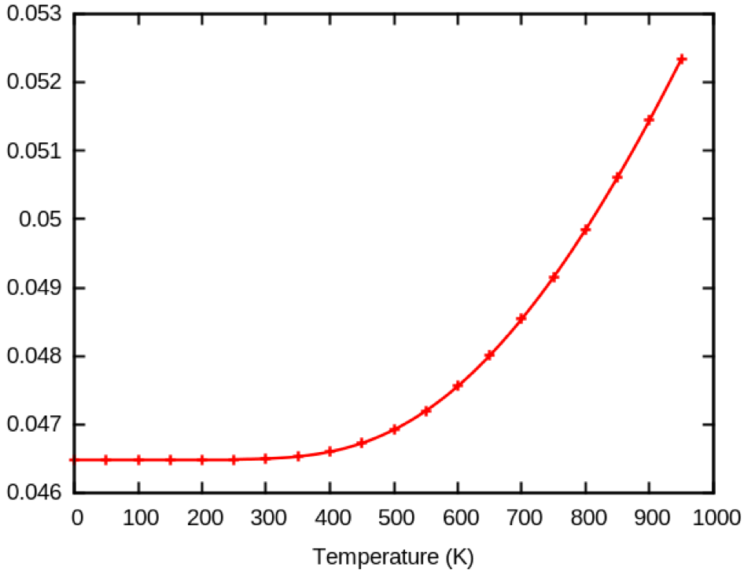
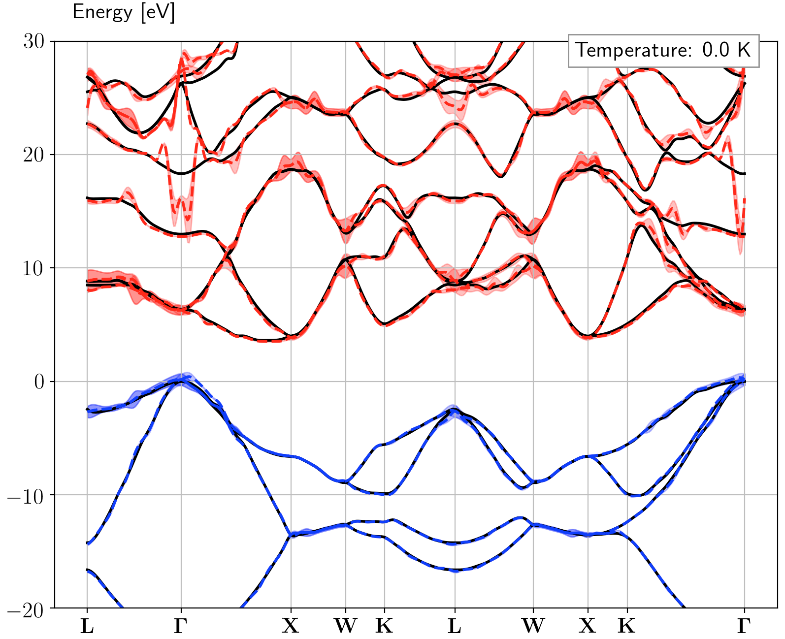
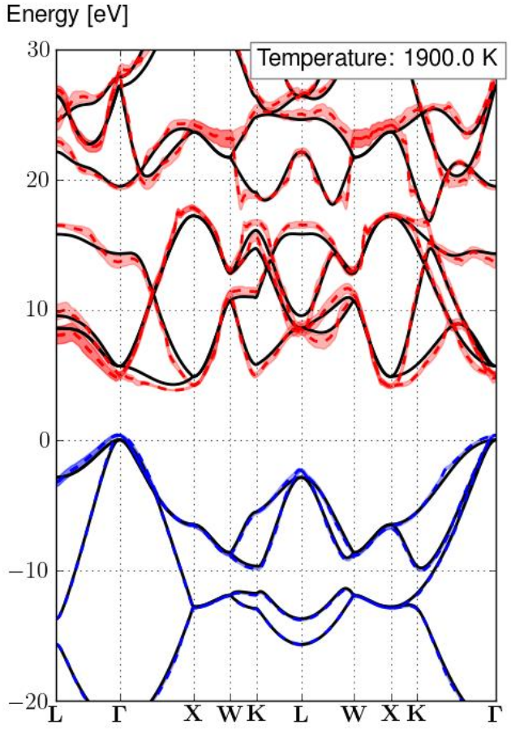

Lesson TDepES¶
Temperature-DEPendence of the Electronic Structure.¶
This lesson aims at showing how to get the following physical properties, for periodic solids:
-
The zero-point-motion renormalization (ZPR) of eigenenergies
-
The temperature-dependence of eigenenergies
-
The lifetime/broadening of eigenenergies
It should take about 1 hour.
For the theory related to the temperature-dependent calculations, please read the following papers: [Ponce2015], [Ponce2014] and [Ponce2014a].
There are two ways to compute the temperature dependence with Abinit:
-
Using Anaddb: historically the first implementation. This option does not require Netcdf.
-
Using post-processing python scripts: this is the recommended approach as it provides more options and is more efficient (less disk space, less memory demanding). This option requires Netcdf (both in Abinit and python). In this tutorial, we only focus on the netCDF-based approach.
Important
In order to run the python script you need:
- python 2.7.6 or higher, python3 is not supported
- numpy 1.7.1 or higher
- netCDF4 and netCDF4 for python
- scipy 0.12.0 or higher
Abinit must be configured with: configure --with-config-file=myconf.ac
where the configuration file must contain at least:
with_trio_flavor="netcdf+other-options" # To link against an external libs, use #with_netcdf_incs="-I${HOME}/local/include" # if (netcdf4 + hdf5): #with_netcdf_libs="-L/usr/local/lib -lnetcdff -lnetcdf -L${HOME}/local/lib -lhdf5_hl -lhdf5" # else if netcdf3: #with_netcdf_libs="-L${HOME}/local/lib/ -lnetcdff -lnetcdf"
A list of configuration files for clusters is available in the abiconfig repository
If you have a prebuilt abinit executable, use:
./abinit -b
to get the list of libraries/options activated in the build.
You should see netcdf in the TRIO flavor section:
=== Connectors / Fallbacks === Connectors on : yes Fallbacks on : yes DFT flavor : libxc-fallback FFT flavor : none LINALG flavor : netlib-fallback MATH flavor : none TIMER flavor : abinit TRIO flavor : netcdf
1 Calculation of the ZPR of eigenenergies at q=Γ.¶
The reference input files for this lesson are located in
~abinit/tests/tutorespfn/Input and the corresponding reference output files
are in ~abinit/tests/tutorespfn/Refs.
The prefix for files is tdepes. As usual, we use the shorthand ~abinit to indicate
the root directory where the abinit package has been deployed, but most often
consider the paths relative to this directory.
First, examine the tests/tutorespfn/Input/tdepes_1.in input file.
# C in diamond structure. ndtset 3 elph2_imagden 0.1 eV # Imaginary shift of the denominator of the sum-over-states # in the perturbation denominator. Usual value is 0.1 eV to reproduce # experimental broadening at 300K. Increasing the value help the # convergence with respect to the number of q-points. ngkpt 2 2 2 # Underconverged : k-grid should be at least 4x4x4 for diamond to be converged. nshiftk 1 shiftk 0.0 0.0 0.0# Ground state density tolvrs1 1.0d-8 # Underconverged : tolvrs 1.0d-18 should be used for converged results
# Non self-consistent calculation with an arbitrary q point (here Gamma) getden2 1 iscf2 -2 nqpt2 1 qpt2 0.0 0.0 0.0 nbdbuf2 2 tolwfr2 1.0d-8 # Underconverged : tolwfr 1.0d-22 should be used for converged results
# Computation at Gamma getwfk3 1 getwfq3 2 nqpt3 1 qpt3 0.0 0.0 0.0 # Calculation at Gamma ieig2rf3 5 # Static eigenvalues corrections using DFPT (Sternheimer) smdelta3 1 # Flag required to produce the _EIGI2D used to # compute the lifetime of electronic levels. # smdelta = 1 ==> Fermi-Dirac smearing. nbdbuf3 2 # 2 buffer bands. RF converges much faster. rfphon3 1 # Do phonon response rfatpol3 1 2 # Treat displacements of all atoms rfdir3 1 1 1 # Do all directions tolwfr3 1.0d-8 # Underconverged : tolwfr 1.0d-22 should be used for converged results kptopt3 3
# Cell dependent parameters acell 3*6.675 rprim 0 .5 .5 .5 0 .5 .5 .5 0 nsym 1 # Disable symmetries. Symmetries are not yet in production. natom 2 typat 1 1 xred 3*0.0 3*0.25 nband 12 ntypat 1 znucl 6 diemac 6 ecut 10 # Underconverged ecut. enunit 2 nstep 50 istwfk *1
## After modifying the following section, one might need to regenerate the pickle database with runtests.py -r #%%<BEGIN TEST_INFO> #%% [setup] #%% executable = abinit #%% need_cpp_vars = HAVE_NETCDF #%% [files] #%% files_to_test = #%% tdepes_1.out, tolnlines= 20, tolabs= 5.000e-05, tolrel= 5.000e-04, fld_options=-medium #%% psp_files = 6c.pspnc #%% [paral_info] #%% max_nprocs = 2 #%% [extra_info] #%% authors = S. Ponc\'e #%% keywords = NC, DFPT, EPH #%% description = Temperature dependence calculation of diamond. #%%<END TEST_INFO>
Note that there are three datasets (ndtset=3). The first dataset corresponds to a standard self-consistent calculation, with an unshifted eight k-point grid, producing e.g. the ground-state eigenvalue file tdepes_1o_DS1_EIG.nc , as well as the density file tdepes_1o_DS1_DEN. The latter is read (getden2=1) to initiate the second dataset calculation, which is a non-self-consistent run, specifically at the Gamma point only (there is no real recomputation with respect to the dataset 1, it only extract a subset of the eight k-point grid). This second dataset produces the wavefunction file tdepes_1o_DS2_WFQ, that is read by the third dataset (getwfq3=2), as well as the tdepes_1o_DS1_WFK file from the first dataset (getwfk3=1).
The third dataset corresponds to a DFPT phonon calculation (rfphon3=1) with displacement of all atoms (rfatpol3= 1 2) in all directions (rfdir3= 1 1 1). This induces the creation of the Derivative DataBase file tdepes_1o_DS3_DDB. The electron-phonon matrix elements are produced because of ieig2rf3=5 , this option generating the needed netCDF files tdepes_1o_DS3_EIGR2D.nc and tdepes_1o_DS3_GKK.nc .
We will use tests/tutorespfn/Input/tdepes_1.files, with minor modifications -see below-, to execute abinit.
tdepes_1.in tdepes_1.out tdepes_1i tdepes_1o tdepes_1 ../../Psps_for_tests/6c.pspnc
In order to run abinit, we suggest that you create a working directory, why not call it Work,
as subdirectory of ~abinit/tests/tutorespfn/Input, then
copy/modify the relevant files. Explicitly:
cd ~abinit/tests/tutorespfn/Input mkdir Work cd Work cp ../tdepes*in ../tdepes*files .
Then, edit the tests/tutorespfn/Input/tdepes_1.files to modify location of the pseudopotential file (from the Work subdirectory, the location is ../../../Psps_for_tests/6c.pspnc, although you might as well copy the file 6c.pspnc in the Work directory, in which case the location is simply 6c.pspnc). Finally, issue
abinit < tdepes_1.files > tdepes_1.stdout
(where abinit might have to be replaced by the proper location of the abinit executable, or by ./abinit if you have
copied abinit in the Work directory).
If you have compiled the code with Netcdf, the calculation will produce several _EIG.nc, _DDB, EIGR2D.nc and EIGI2D.nc files, that contain respectively the eigenvalues (GS or perturbed), the second-order derivative of the total energy with respect to two atomic displacements, the electron-phonon matrix elements used to compute the renormalization of the eigenenergies and the electron-phonon matrix elements used to compute the lifetime of the electronic states.
You can now copy three post-processing python files from ~abinit/scripts/post_processing/temperature-dependence . Make sure you are in the directory containing the output files produced by the code and issue:
cp ~abinit/scripts/post_processing/temperature-dependence/temperature_final.py . cp ~abinit/scripts/post_processing/temperature-dependence/rf_final.py . cp ~abinit/scripts/post_processing/plot_bs.py .
in which ~abinit has been replaced by the proper path.
You can then simply run the python script with the following command:
./temperature_final.py
and enter the information asked by the script, typically the following (data contained in ~abinit/tests/tutorespfn/Input/tdepes_1_temperature.in):
1 # Number of cpus
2 # Static ZPR computed in the Allen-Heine-Cardona theory
temperature_1 # Prefix for output files
0.1 # Value of the smearing parameter for AHC (in eV)
0.1 # Gaussian broadening for the Eliashberg function and PDOS (in eV)
0 0.5 # Energy range for the PDOS and Eliashberg calculations (in eV)
0 1000 50 # min, max temperature and temperature step
1 # Number of Q-points we have (here we only computed $\Gamma$)
tdepes_1o_DS3_DDB # Name of the response-funtion (RF) DDB file
tdepes_1o_DS2_EIG.nc # Eigenvalues at $\mathbf{k+q}$
tdepes_1o_DS3_EIGR2D.nc # Second-order electron-phonon matrix element
tdepes_1o_DS3_GKK.nc # Name of the 0 GKK file
tdepes_1o_DS1_EIG.nc # Name of the unperturbed EIG.nc file with Eigenvalues at $k$
Alternatively, copy this example file in the Work directory if not yet done, and then run
./temperature_final.py < tdepes_1_temperature.in
1 2 temperature_1 0.1 0.1 0 0.5 0 1000 50 1 tdepes_1o_DS3_DDB tdepes_1o_DS2_EIG.nc tdepes_1o_DS3_EIGR2D.nc tdepes_1o_DS3_GKK.nc tdepes_1o_DS1_EIG.nc
Warning
Remember to use py2.7 and install the libraries required by the script before running.
For pip, use:
pip install netcdf4
or:
conda install netcdf4
if you are using conda
You should see on the screen an output similar to:
Start on 15/3/2018 at 13h29 ____ ____ _ _ | _ \| _ \ | |_ ___ _ __ ___ _ __ ___ _ __ __ _| |_ _ _ _ __ ___ | |_) | |_) |____| __/ _ \ '_ ` _ \| '_ \ / _ \ '__/ _` | __| | | | '__/ _ \ | __/| __/_____| || __/ | | | | | |_) | __/ | | (_| | |_| |_| | | | __/ |_| |_| \__\___|_| |_| |_| .__/ \___|_| \__,_|\__|\__,_|_| \___| |_| Version 1.3 This script compute the static/dynamic zero-point motion and the temperature dependence of eigenenergies due to electron-phonon interaction. The electronic lifetime can also be computed. WARNING: The first Q-point MUST be the Gamma point. Enter the number of cpu on which you want to multi-thread Define the type of calculation you want to perform. Type: 1 if you want to run a non-adiabatic AHC calculation 2 if you want to run a static AHC calculation 3 if you want to run a static AHC calculation without control on active space (not recommended !) Note that for 1 & 2 you need _EIGR2D.nc and _GKK.nc files obtained through ABINIT option "ieig2rf 5" Enter name of the output file Enter value of the smearing parameter for AHC (in eV) Enter value of the Gaussian broadening for the Eliashberg function and PDOS (in eV) Enter the energy range for the PDOS and Eliashberg calculations (in eV): [e.g. 0 0.5] Introduce the min temperature, the max temperature and the temperature steps. e.g. 0 200 50 for (0,50,100,150) Enter the number of Q-points you have Enter the name of the 0 DDB file Enter the name of the 0 eigq file Enter the name of the 0 EIGR2D file Enter the name of the 0 GKK file Enter the name of the unperturbed EIG.nc file at Gamma Q-point: 0 with wtq = 1.0 and reduced coord. [ 0. 0. 0.] Now compute active space ... Now compute generalized g2F Eliashberg electron-phonon spectral function ... End on 15/3/2018 at 13 h 29 Runtime: 0 seconds (or 0.0 minutes)
The python code has generated the following files:
- temperature_1.txt
- This text file contains the zero-point motion renormalization (ZPR) at each k-point for each band. It also contain the evolution of each band with temperature at k=. At the end of the file, the Fan/DDW contribution is also reported.
- temperature_1_EP.nc
- This netcdf file contains a number for each k-point, for each band and each temperature. The real part of this number is the ZPR correction and the imaginary part is the lifetime.
We can for example visualize the temperature dependence at k= of the HOMO bands
(Band: 3 section in the temperature_1.txt file, that you can examine)
with the contribution of only q=.

The HOMO eigenenergies correction goes up with temperature… You can also plot the LUMO corrections and see that they go down. The ZPR correction as well as their temperature dependence usually closes the gap of semiconductors.
As usual, checking whether the input parameters give converged values is of course important. The run used ecut=10. With the severely underestimated ecut=5, the HOMO correction goes down with temperature.
2 Converging the calculation with respect to the grid of phonon wavevectors¶
Convergence studies with respect to most of the parameters will rely on obvious modifications of the input file detailed in the previous section. However, using more than one q-point phonon wavevector needs a non-trivial generalisation of this procedure. This is because each q-point needs to be treated in a different dataset in the current version of ABINIT.
The netCDF version can perform the q-wavevector integration either with random q-points or homogenous Monkhorst-Pack meshes. Both grids have been used in the Ref. [Ponce2014], see e.g. Fig. 3 of this paper.
For the random integration method you should create a script that generates random q-points, perform the Abinit calculations at these points, gather the results and analyze them. The temperature_final.py script will detect that you used random integration thanks to the weight of the q-point stored in the _EIGR2D.nc file and perform the integration accordingly. The random integration converges slowly but in a consistent manner.
However, since this method is a little bit less user-friendly than the one based on homogeneous grids, we will focus on this homogenous integration. Even simpler, it is not trivial. In this case, the user must specify in the ABINIT input file the homogeneous q-point grid, using input variables like ngqpt, qptopt, shiftq, nshiftq, …, i.e. variables whose names are similar to those used to specify the k-point grid (for electrons).
There are several difficulties here. First, since we focus on the k= point, we expect to be able to use symmetries to decrease the computational load, as is invariant under all symmetry operations of the crystal. The symmetry operations of the crystal will be used to decrease the number of q-wavevectors, but they cannot be used as well to decrease the k-point grid during the corresponding self-consistent phonon computation. How this different behaviour of k-grids and q-grids can be handled by ABINIT ? By convention, in such case, with nsym=1 the k-point grid will be generated in the Full Brillouin zone, without use of symmetries, while the q-point grid with qptopt=1 with be generated in the irreducible Brillouin Zone, despite nsym=1. In order to generate q-point grids that are not folded in the irreducible Brillouin Zone, use another value of qptopt. Especially qptopt=3 has to be used to generate q points in the full Brillouin zone.
Second, the number of ABINIT datasets is expected to be given in the input file, by the user, but not determined on-the-flight by ABINIT. Still, this number of datasets is determined by the number of q points… Thus, the user will have to compute it before being able to launch the real q-point calculations, since it determines ndtset.
How to determine the number of irreducible q points ?
Well, the easiest procedure is to compute it for an equivalent k-point grid, by a quick run.
An example will clarify this. Suppose that one is looking for the number of q-points corresponding to
ngqpt 4 4 4 qptopt 1 nshiftq 1 shiftq 0.0 0.0 0.0
One make a quick ABINIT run with tests/tutorespfn/Input/tdepes_2.in. Note that several input variables have been changed with respect to tests/tutorespfn/Input/tdepes_1.in:
ndtset 1 nstep 0 prtebands 0 ngkpt 4 4 4 nshiftk 1 shiftk 0.0 0.0 0.0 nsym 0
In this example, the new values of ndtset and nstep, and the definition of prtebands allow a fast run (nline==0 might be specified as well, or even, the run might be interrupted after a few seconds, since the number of k points is very quickly available). Then, the k-point grid is specified thanks to ngkpt, nshiftk, shiftk, replacing the corresponding input variables for the q-point grid. The use of symmetries has been reenabled thanks to nsym=0.
After possibly modifying tests/tutorespfn/Input/tdepes_2.files to account for the location of the pseudopotential file, as above, issue:
abinit < tdepes_2.files > tdepes_2.stdout
Now, the number of points can be seen in the output file :
nkpt 8
the list of these eight k-points being given in
kpt 0.00000000E+00 0.00000000E+00 0.00000000E+00
2.50000000E-01 0.00000000E+00 0.00000000E+00
5.00000000E-01 0.00000000E+00 0.00000000E+00
2.50000000E-01 2.50000000E-01 0.00000000E+00
5.00000000E-01 2.50000000E-01 0.00000000E+00
-2.50000000E-01 2.50000000E-01 0.00000000E+00
5.00000000E-01 5.00000000E-01 0.00000000E+00
-2.50000000E-01 5.00000000E-01 2.50000000E-01
We are now ready to launch the determination of the _EIG.nc, _DDB, EIGR2D.nc and EIGI2D.nc files, with 8 q-points. As for the calculation of the previous section, we will rely on three datasets for each q-point. This permits a well-structured set of calculations, although there is some redundancy. Indeed, the first of these datasets will correspond to an unperturbed ground-state calculation identical for all q. It is done very quickly because the converged wavefunctions are already available. The second dataset will correspond to a non-self-consistent ground-state calculation at k+q (it is also quick thanks to previously available wavefunctions), and the third dataset will correspond to the DFPT calculations at k+q (this is the CPU intensive part) .
So, compared to the first run in this lesson, we have to replace
ndtset 3 by ndtset 24 udtset 8 3
in the input file tests/tutorespfn/Input/tdepes_3.in, and adjusted accordingly all input variables that were dataset-dependent.
# C in diamond structure. ndtset 24 udtset 8 3 iqpt:? 1 # Index of the first q-point of this file (useful if you split your # input files elph2_imagden 0.1 eV # Imaginary shift of the denominator of the sum-over-states # in the perturbation denominator. Usual value is 0.1 eV to reproduce # experimental broadening at 300K. Increasing the value help the # convergence with respect to the number of q-points. ngkpt 2 2 2 # Underconverged : k-grid should be at least 4x4x4 for diamond to be converged. nshiftk 1 shiftk 0.0 0.0 0.0 ngqpt 4 4 4 # Should be converged upon qptopt 1 nshiftq 1 shiftq 0.0 0.0 0.0 # Ground state density iqpt+? 1 tolvrs?1 1.0d-8 # Underconverged : tolvrs 1.0d-18 should be used for converged results # Non self-consistent calculation with an arbitrary q point (here Gamma) getden?2 -1 iscf?2 -2 nqpt?2 1 nbdbuf?2 2 tolwfr?2 1.0d-8 # Underconverged : tolwfr 1.0d-22 should be used for converged results # Computation at Gamma getwfk?3 -2 getwfq?3 -1 nqpt?3 1 ieig2rf?3 5 # Static eigenvalues corrections using DFPT (Sternheimer) smdelta?3 1 # Flag required to produce the _EIGI2D used to # compute the lifetime of electronic levels. # smdelta = 1 ==> Fermi-Dirac smearing. nbdbuf?3 2 # 2 buffer bands. RF converges much faster. rfphon?3 1 # Do phonon response rfatpol?3 1 2 # Treat displacements of all atoms rfdir?3 1 1 1 # Do all directions tolwfr?3 1.0d-8 # Underconverged : tolwfr 1.0d-22 should be used for converged results kptopt?3 3 # Cell dependent parameters acell 3*6.675 rprim 0 .5 .5 .5 0 .5 .5 .5 0 nsym 1 # Disable symmetries. Symmetries are not yet in production. natom 2 typat 1 1 xred 3*0.0 3*0.25 nband 12 ntypat 1 znucl 6 diemac 6 ecut 10 enunit 2 nstep 50 istwfk *1 ## After modifying the following section, one might need to regenerate the pickle database with runtests.py -r #%%<BEGIN TEST_INFO> #%% [setup] #%% executable = abinit #%% need_cpp_vars = HAVE_NETCDF #%% [files] #%% files_to_test = #%% tdepes_3.out, tolnlines= 30, tolabs= 5.000e-05, tolrel= 5.000e-04, fld_options=-medium #%% psp_files = 6c.pspnc #%% [paral_info] #%% max_nprocs = 2 #%% [extra_info] #%% authors = S. Ponc\'e #%% keywords = NC, DFPT, EPH #%% description = Temperature dependence calculation of diamond. #%%<END TEST_INFO>
Please, refer to the explanation of the usage of a double-loop of datasets if you are confused about the meaning of udtset, and the usage of the corresponding metacharacters. We have indeed also introduced
iqpt:? 1 iqpt+? 1
that translates into
iqpt11 1 iqpt12 1 iqpt13 1 iqpt21 2 iqpt22 2 iqpt23 2 iqpt31 3 ...
allowing to perform calculations for three datasets at each q-point.
After possibly modifying tests/tutorespfn/Input/tdepes_3.files to account for the location of the pseudopotential file, as above, issue:
abinit < tdepes_3.files > tdepes_3.stdout
This is a significantly longer ABINIT run (still less than one minute), also producing many files.
When the run is finished, copy the file tests/tutorespfn/Input/tdepes_3_temperature.in in the working directory (if not yet done) and launch the python script with:
./temperature_final.py < tdepes_3_temperature.in
tdepes_3.in tdepes_3.out tdepes_3i tdepes_3o tdepes_3 ../../Psps_for_tests/6c.pspnc
Examination of the same HOMO band at k= for a 4x4x4 q-point grid gives a very different result than previously. Indeed, for the ZPR, one finds
Band: 3 0.0 0.154686616316
instead of
Band: 3 0.0 0.0464876236664
that, is, the ZPR is about three times smaller, and similary for the temperature dependence.
As a matter of fact, diamond requires an extremely dense q-point grid (40x40x40) to be converged. On the bright side, each q-point calculation is independent and thus the parallel scaling is ideal… Running separate jobs for different q-points is quite easy thanks to the dtset approach.
3 Calculation of the eigenenergy corrections along high-symmetry lines¶
The calculation of the electronic eigenvalue correction due to electron-phonon coupling along high-symmetry lines requires the use of 6 datasets per q-point. Moreover, the choice of an arbitrary k-wavevector breaks all symmetries of the crystal. Different datasets are required to compute the following quantites:
-
The ground-state wavefunctions on the Homogeneous k-point sampling.
-
The ground-state wavefunctions computed along the bandstructure k-point sampling.
-
The ground-state wavefunctions on the shifted Homogeneous k+q-point sampling.
-
The perturbed density integrated over the homogeneous k+q grid.
-
The ground-state wavefunctions obtained from reading the perturbed density of the previous dataset.
Reading the previous quantity we obtain the el-ph matrix elements along the BS with all physical quantities integrated over a homogeneous grid.
We will use the tests/tutorespfn/Input/tdepes_4.in input file
# C in diamond structure. ndtset 48 udtset 8 6 iqpt:? 1 # Index of the first q-point of this file (useful if you split your # input files elph2_imagden 0.1 eV # Imaginary shift of the denominator of the sum-over-states # in the perturbation denominator. Usual value is 0.1 eV to reproduce # experimental broadening at 300K. Increasing the value help the # convergence with respect to the number of q-points. ngkpt 2 2 2 # Underconverged : k-grid should be at least 4x4x4 for diamond to be converged. nshiftk 1 shiftk 0.0 0.0 0.0 ngqpt 2 2 2 # Should be converged upon qptopt 3 nshiftq 1 shiftq 0.0 0.0 0.0 # Ground state density iqpt+? 1 tolvrs?1 1.0d-8 # Underconverged : tolvrs 1.0d-18 should be used for converged results # Non self-consistent calculation following high sym k path getden?2 -1 iscf?2 -2 getwfk?2 -1 nstep?2 50 tolwfr?2 1.0d-8 # Underconverged : tolwfr 1.0d-22 should be used for converged results kptopt?2 -9 ndivsm?2 5 kptbounds?2 1/2 0.0 0.0 # L 0.0 0.0 0.0 # Gamma 0.0 1/2 1/2 # X 1/4 1/2 3/4 # W 3/8 3/8 3/4 # K 1/2 1/2 1/2 # L 1/4 1/2 3/4 # W 1/2 1/2 1.0 # X 3/8 3/8 3/4 # K 0.0 0.0 0.0 # Gamma # Non self-consistent calculation with an arbitrary q point getden?3 -2 getwfk?3 -2 iscf?3 -2 nqpt?3 1 nbdbuf?3 2 tolwfr?3 1.0d-8 # Underconverged : tolwfr 1.0d-22 should be used for converged results kptopt?3 1 # Computation at q getwfk?4 -3 getwfq?4 -1 nqpt?4 1 ieig2rf?4 5 # Static eigenvalues corrections using DFPT (Sternheimer) smdelta?4 1 # Flag required to produce the _EIGI2D used to # compute the lifetime of electronic levels. # smdelta = 1 ==> Fermi-Dirac smearing. nbdbuf?4 2 # 2 buffer bands. RF converges much faster. rfphon?4 1 # Do phonon response rfatpol?4 1 2 # Treat displacements of all atoms rfdir?4 1 1 1 # Do all directions tolwfr?4 1.0d-8 # Underconverged : tolwfr 1.0d-22 should be used for converged results kptopt?4 3 # Non self-consistent calculation following high sym k path nqpt?5 1 getden?5 -4 iscf?5 -2 get1den?5 -1 getwfk?5 -3 nbdbuf?5 2 # 2 buffer bands. RF converges much faster. nstep?5 1 # We do not want mixing (self-consistent) tolwfr?5 1.0d-8 # Underconverged : tolwfr 1.0d-22 should be used for converged results kptopt?5 -9 ndivsm?5 5 kptbounds?5 1/2 0.0 0.0 # L 0.0 0.0 0.0 # Gamma 0.0 1/2 1/2 # X 1/4 1/2 3/4 # W 3/8 3/8 3/4 # K 1/2 1/2 1/2 # L 1/4 1/2 3/4 # W 1/2 1/2 1.0 # X 3/8 3/8 3/4 # K 0.0 0.0 0.0 # Gamma # Computation at an other q point nqpt?6 1 getden?6 -5 get1den?6 -2 getwfk?6 -4 getwfq?6 -1 tolwfr?6 1.0d-8 # Underconverged : tolwfr 1.0d-22 should be used for converged results nbdbuf?6 2 # 2 buffer bands. RF converges much faster. #ieig2rf?6 1 ieig2rf?6 5 smdelta?6 1 rfphon?6 1 rfatpol?6 1 2 rfdir?6 1 1 1 iscf?6 -2 kptopt?6 -9 ndivsm?6 5 kptbounds?6 1/2 0.0 0.0 # L 0.0 0.0 0.0 # Gamma 0.0 1/2 1/2 # X 1/4 1/2 3/4 # W 3/8 3/8 3/4 # K 1/2 1/2 1/2 # L 1/4 1/2 3/4 # W 1/2 1/2 1.0 # X 3/8 3/8 3/4 # K 0.0 0.0 0.0 # Gamma # Cell dependant parameters acell 3*6.675 rprim 0 .5 .5 .5 0 .5 .5 .5 0 nsym 1 # Disable symmetries. Symmetries are not yet in production. natom 2 typat 1 1 xred 3*0.0 3*0.25 nband 12 ntypat 1 znucl 6 diemac 6 ecut 10 # Underconverged ecut. enunit 2 nstep 50 istwfk *1 ## After modifying the following section, one might need to regenerate the pickle database with runtests.py -r #%%<BEGIN TEST_INFO> #%% [setup] #%% executable = abinit #%% need_cpp_vars = HAVE_NETCDF #%% [files] #%% files_to_test = #%% tdepes_4.out, tolnlines= 0, tolabs= 0.000e-00, tolrel= 0.000e-00, fld_options=-easy #%% psp_files = 6c.pspnc #%% [paral_info] #%% max_nprocs = 2 #%% [extra_info] #%% authors = S. Ponc\'e #%% keywords = NC, DFPT, EPH #%% description = Temperature dependence calculation of diamond. #%%<END TEST_INFO>
Note the use of the usual input variables to define a path in the Brillouin Zone to build an electronic band structure: kptbounds, kptopt, and ndivsm. Note also that we have defined qptopt=3. The number of q-points is thus very easy to determine, as being the product of ngqpt values times nshiftq. Here a very rough 2*2*2 grid has been chosen, even less dense than the one for section 2.
After possibly modifying tests/tutorespfn/Input/tdepes_4.files to account for the location of the pseudopotential file, as above, issue:
abinit < tdepes_4.files > tdepes_4.stdout
This is a significantly longer ABINIT run (2-3 minutes), also producing many files.
then use tests/tutorespfn/Input/tdepes_4_temperature.in for the python script.
1 2 temperature_4 0.1 0.1 0 0.5 0 1000 50 8 tdepes_4o_DS14_DDB tdepes_4o_DS24_DDB tdepes_4o_DS34_DDB tdepes_4o_DS44_DDB tdepes_4o_DS54_DDB tdepes_4o_DS64_DDB tdepes_4o_DS74_DDB tdepes_4o_DS84_DDB tdepes_4o_DS15_EIG.nc tdepes_4o_DS25_EIG.nc tdepes_4o_DS35_EIG.nc tdepes_4o_DS45_EIG.nc tdepes_4o_DS55_EIG.nc tdepes_4o_DS65_EIG.nc tdepes_4o_DS75_EIG.nc tdepes_4o_DS85_EIG.nc tdepes_4o_DS16_EIGR2D.nc tdepes_4o_DS26_EIGR2D.nc tdepes_4o_DS36_EIGR2D.nc tdepes_4o_DS46_EIGR2D.nc tdepes_4o_DS56_EIGR2D.nc tdepes_4o_DS66_EIGR2D.nc tdepes_4o_DS76_EIGR2D.nc tdepes_4o_DS86_EIGR2D.nc tdepes_4o_DS16_GKK.nc tdepes_4o_DS26_GKK.nc tdepes_4o_DS36_GKK.nc tdepes_4o_DS46_GKK.nc tdepes_4o_DS56_GKK.nc tdepes_4o_DS66_GKK.nc tdepes_4o_DS76_GKK.nc tdepes_4o_DS86_GKK.nc tdepes_4o_DS12_EIG.nc
with the usual syntax:
./temperature_final.py < tdepes_4_temperature.in
You can now copy the plotting script (Plot-EP-BS) python file from
~abinit/scripts/post_processing/plot_bs.py into the directory where you did all the calculations.
Now run the script:
./plot_bs.py
with the following input data:
temperature_4_EP.nc L \Gamma X W K L W X K \Gamma -20 30 0
or more directly
./plot_bs.py < tdepes_4_plot_bs.in
This should give the following bandstructure

where the solid black lines are the traditional electronic bandstructure, the dashed lines are the electronic eigenenergies with electron-phonon renormalization at a defined temperature (here 0K). Finally the area around the dashed line is the lifetime of the electronic eigenstates.
Notice all the spikes in the electron-phonon case. This is because we did a completely under-converged calculation with respect to the q-point sampling.
It is possible to converge the calculations using ecut=30 Ha, a ngkpt grid of 6x6x6 and an increasing ngqpt grid to get converged results:
| Convergence study ZPR and inverse lifetime(1/τ) [eV] at 0K | | q-grid | Nb qpt | Γ25' | Γ15 | Min Γ-X | | | in IBZ | ZPR | 1/τ | ZPR | 1/τ | ZPR | 1/τ | | 4x4x4 | 8 | 0.1175 | 0.0701 | -0.3178 | 0.1916 | -0.1570 | 0.0250 | | 10x10x10 | 47 | 0.1390 | 0.0580 | -0.3288 | 0.1847 | -0.1605 | 0.0308 | | 20x20x20 | 256 | 0.1446 | 0.0574 | -0.2691 | 0.1823 | -0.1592 | 0.0298 | | 26x26x26 | 511 | 0.1448 | 0.0573 | -0.2736 | 0.1823 | -0.1592 | 0.0297 | | 34x34x34 | 1059 | 0.1446 | 0.0573 | -0.2699 | 0.1821 | -0.1591 | 0.0297 | | 43x43x43 | 2024 | 0.1447 | 0.0572 | -0.2650 | 0.1821 | -0.1592 | 0.0297 |
As you can see the limiting factor for the convergence study is the convergence of the LUMO band at . This band is not the lowest in energy (the lowest is on the line between and X) and therefore this band is rather unstable. This can also be seen by the fact that it has a large electronic broadening, meaning that this state will decay quickly into another state.
Using the relatively dense q-grid of 43x43x43 we can obtain the following converged bandstructure, at a high temperature (1900K):

Here we show the renormalization at a very high temperature of 1900K in order to highlight more the broadening and renormalization that occurs. If you want accurate values of the ZPR at 0K you can look at the table above.
Additional consideration : possible issue while converging your calculations
If you use an extremely fine q-point grid, the acoustic phonon frequencies for q-points close to will be wrongly determined by Abinit. Indeed in order to have correct phonon frequencies close to , one has to impose the acousting sum rule with anaddb and asr@anaddb. However, this feature is not available in the python script. Instead, the script reject the contribution of the acoustic phonon close to if their phonon frequency is lower than 1E-6 Ha. Otherwise one gets unphysically large contribution.
One can tune this parameter by editing the variable “tol6 = 1E-6” in the beginning of the script.
For example, for the last 43x43x43 calculation, it was set to 1E-4.